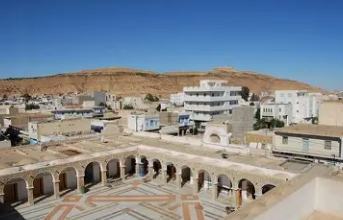
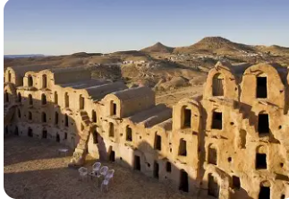
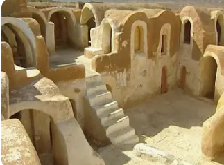
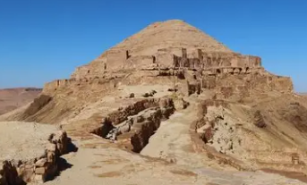
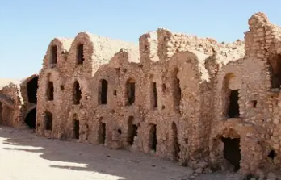

Planète Tatooine de Star Wars

Tataouine est un gouvernorat situé dans l'extrême sud-est de la Tunisie, à la frontière avec la Libye. C'est une région désertique spectaculaire, célèbre mondialement pour avoir inspiré le nom de la planète Tatooine dans Star Wars et pour ses décors de films.
La ville de Tataouine, chef-lieu du gouvernorat, est entourée de villages berbères fortifiés perchés sur les montagnes et de ksour (greniers fortifiés) spectaculaires. Elle est devenue un lieu de pèlerinage pour les fans de Star Wars du monde entier.
Le gouvernorat se distingue par ses ksour monumentaux uniques au monde, ses villages berbères troglodytes accrochés aux falaises, ses paysages lunaires ayant servi de décors à Star Wars, et son patrimoine amazigh exceptionnellement préservé.
La planète Tatooine tire son nom de cette ville. Décors authentiques de la saga : Ksar Hadada, Ksar Ouled Soltane, Matmata. Destination de pèlerinage pour fans du monde entier.
Greniers fortifiés berbères spectaculaires avec ghorfas empilées sur plusieurs étages. Ksar Ouled Soltane, Ksar Hadada, Ksar Megabla. Architecture défensive unique et impressionnante.
Villages fortifiés perchés : Guermessa, Chenini, Douiret avec architecture troglodyte. Ksour blancs accrochés aux falaises, paysages lunaires spectaculaires. Patrimoine amazigh vivant.
Désert de roches, montagnes érodées, plateaux arides aux formes surréalistes. Paysages extraterrestres ayant inspiré George Lucas. Beauté brute et sauvage du Sud tunisien.

Ksar berbère le plus spectaculaire de Tunisie avec ghorfas (cellules voûtées) empilées sur 4 étages autour de deux cours. Architecture monumentale du XVe siècle, escaliers vertigineux, voûtes parfaites. Décor emblématique de Star Wars Episode I. Chef-d'œuvre de l'architecture ksourienne et symbole de Tataouine.

Ksar restauré transformé en hôtel de charme, décor de Star Wars Episode I (quartiers des esclaves). Ghorfas blanchies à la chaux, cours intérieure paisible, vue panoramique sur plaines désertiques. Expérience unique de dormir dans un authentique grenier fortifié berbère.

Village berbère fortifié perché à 600 mètres d'altitude avec ksar en ruines et forteresse byzantine spectaculaire au sommet. Mosquée blanche suspendue à flanc de falaise, greniers troglodytes, vue panoramique à 360° époustouflante. L'un des sites les plus impressionnants du Sud tunisien, paysages à couper le souffle.

Ksour jumeaux accrochés aux flancs de collines arides. Ksar Megabla avec ses ghorfas ocre parfaitement préservées. Ksar Jouamaa dominant la vallée. Architecture défensive ingénieuse, paysages désertiques grandioses. Authenticité totale, loin des circuits touristiques, silence et sérénité du désert profond.